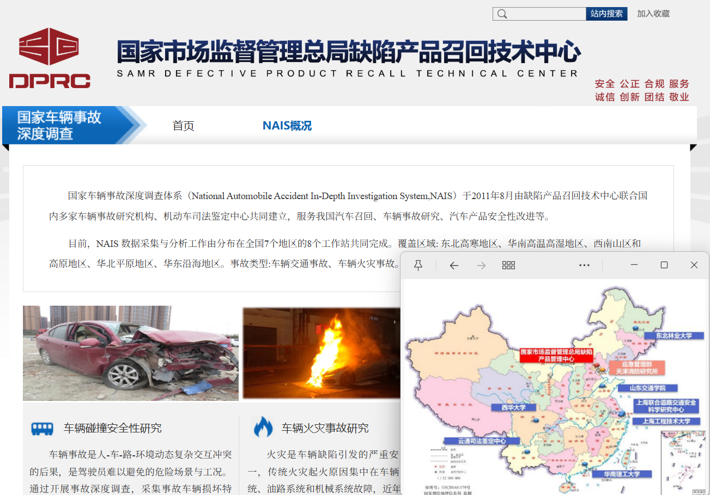
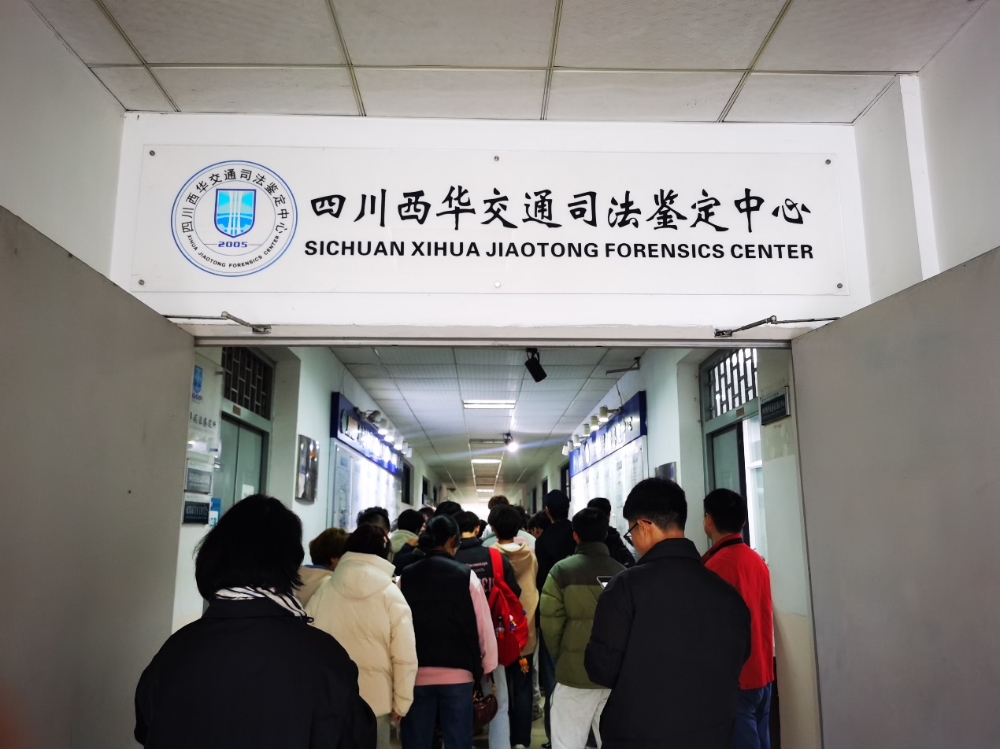
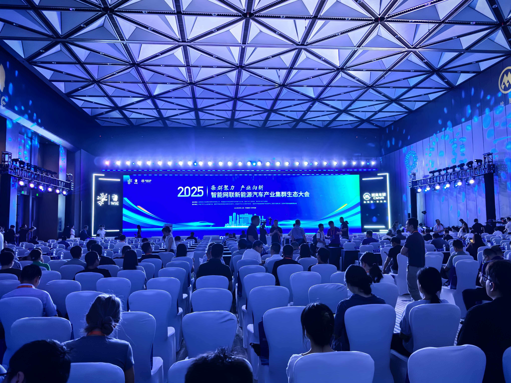
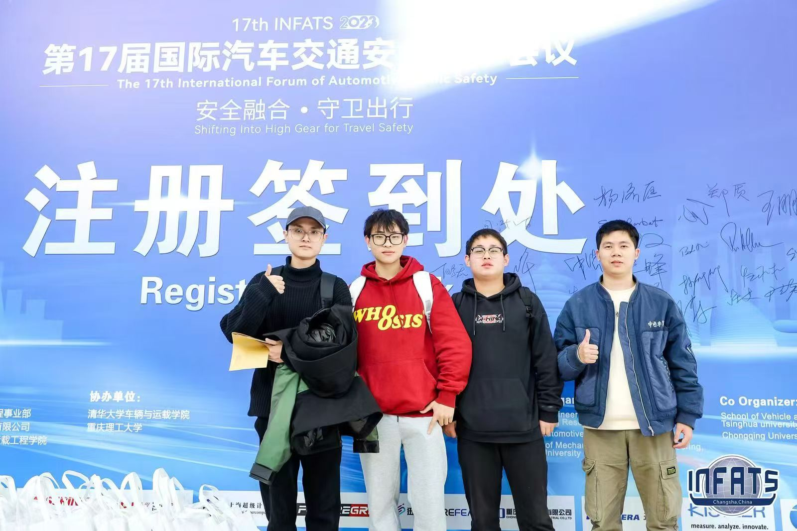
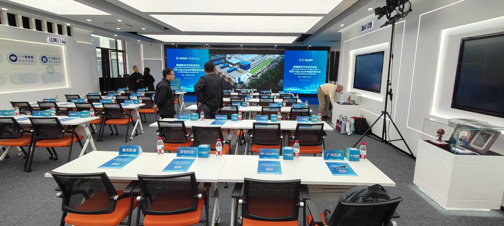
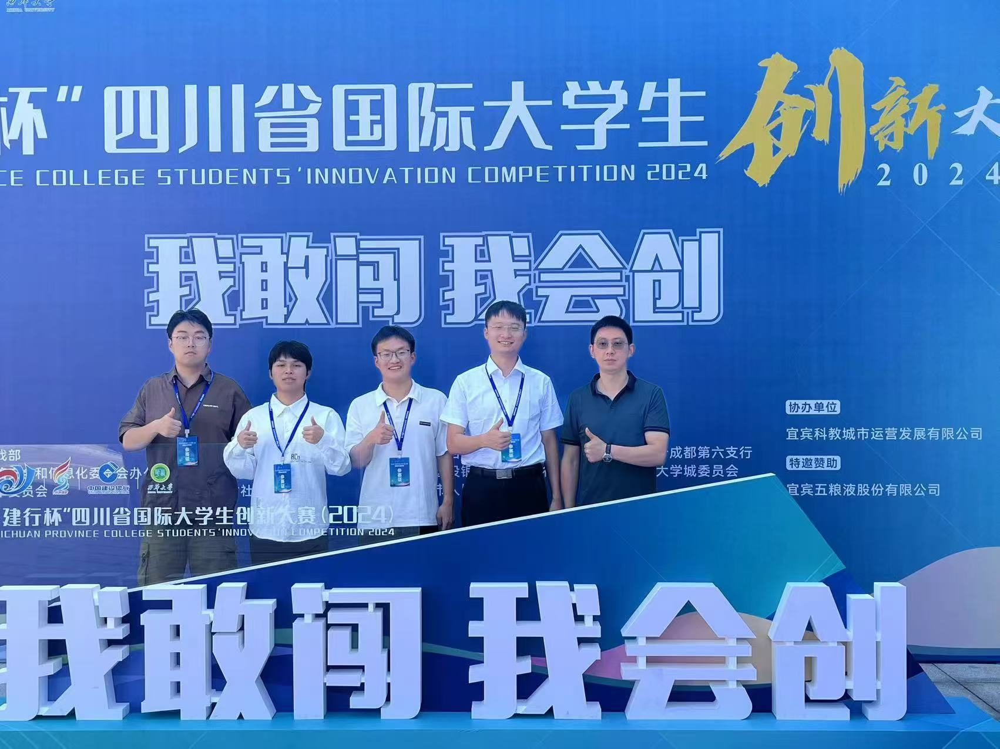
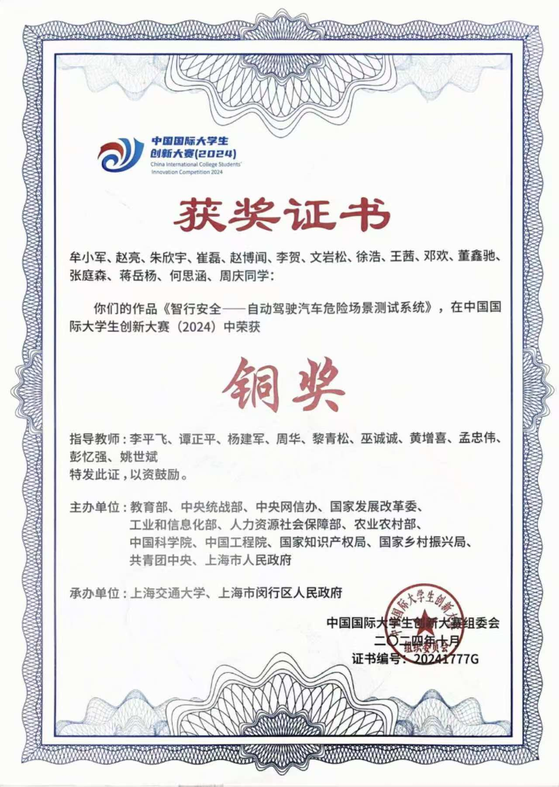
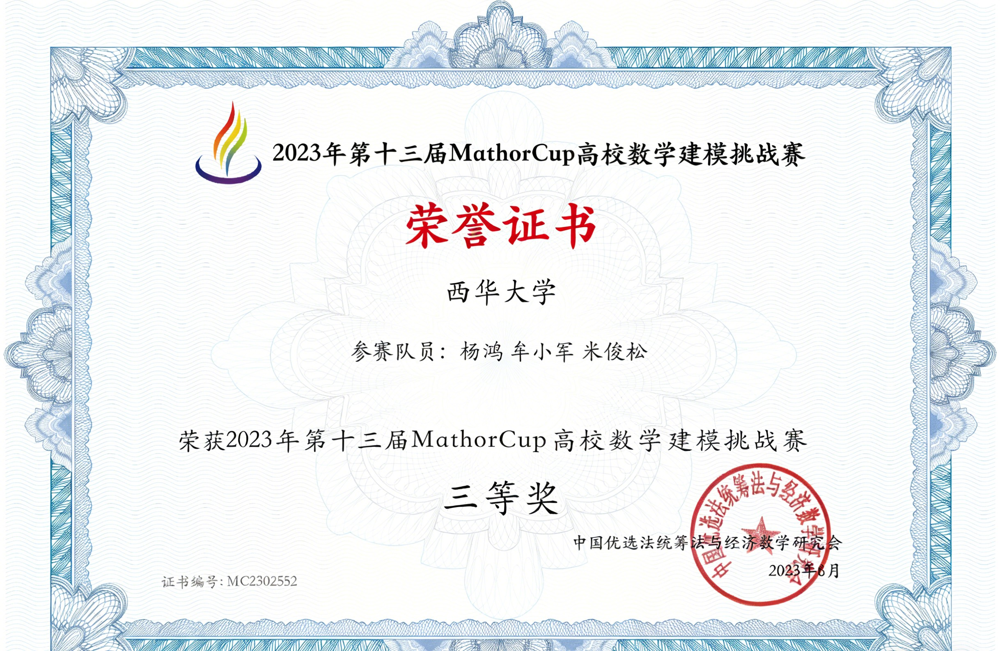
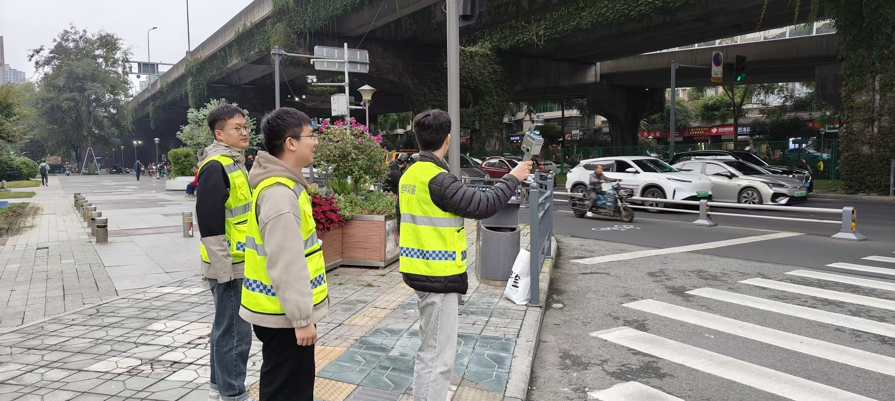
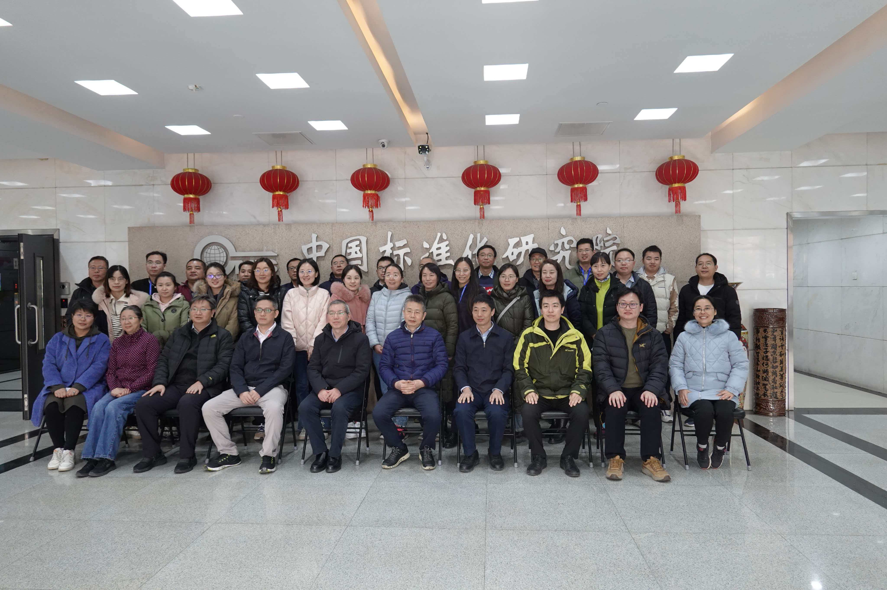

智行安全课题组
Intelligent Transportation Safety Research Group
西华大学 汽车与交通学院 道路交通安全团队

依托国家级道路交通事故深度调查体系，可获取全国范围内的典型事故数据、标准规范和技术指导，为课题组开展事故分析、模型构建提供权威数据源，同时参与国家级事故调查技术研讨与标准制定。

该中心是经司法行政机关批准设立的专业司法鉴定机构，为课题组提供真实的事故鉴定案例、现场勘查实践机会和专业设备支持，实现科研与司法鉴定实践的深度融合。







